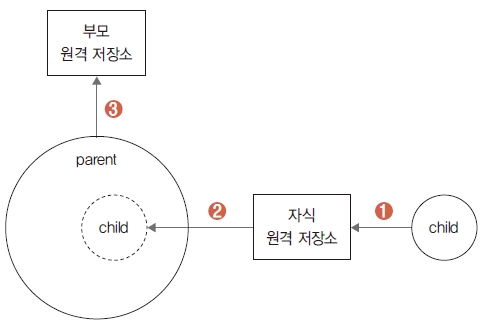

두 저장소를 생성하고 원격 저장소와 연결하여 서브모듈 실습 환경을 준비했습니다. 서브모듈은 2개 이상인 저장소를 부모와 자식 관계로 연결합니다. 저장소를 모듈로 연결하려면 submodule 명령어를 사용합니다.
$ git submodule -help
submodule 명령어는 옵션을 사용하여 다양한 동작을 실행할 수 있습니다. 자세한 옵션은 -help 명령어로 확인합니다.
메인 저장소에 자식 저장소를 연결합니다. 메인 저장소에 자식 저장소를 추가하는 옵션은 add 명 령어입니다. 서브모듈로 저장소가 추가되면 메인 저장소는 서브 저장소를 서브 폴더 형태로 취급합 니다.
$ git submodule add 원격저장소URL 폴더이름
실습하면서 개념을 익혀 봅시다. 먼저 서브 저장소가 추가될 메인 저장소로 이동합니다. 여기서는 부모 저장소를 의미합니다.
infoh@DESKTOP MINGW64 /e/gitstudy11_child (master)
$ cd ../gitstudy11_parent
infoh@DESKTOP MINGW64 /e/gitstudy11_parent (master)
메인 저장소에 submodule 명령어를 사용하여 또 다른 저장소를 추가합니다. 실습에서는 준비한 자 식 저장소를 등록하겠습니다. 자식 저장소를 등록할 때는 자식 저장소와 연결된 원격 저장소 주소 를 입력합니다.
infoh@DESKTOP MINGW64 /e/gitstudy11_parent (master)
$ git submodule add https://github.com/jinygit/gitstudy11_child.git child
Cloning into 'E:/gitstudy11_parent/gitstudy11_child'... 저장소 복제
remote: Enumerating objects: 3, done.
remote: Counting objects: 100% (3/3), done.
remote: Total 3 (delta 0), reused 3 (delta 0), pack-reused 0
Unpacking objects: 100% (3/3), done.
warning: LF will be replaced by CRLF in .gitmodules.
The file will have its original line endings in your working directory
출력 메시지를 살펴보니 자식 저장소와 연결된 원격 저장소에서 복제(clone)를 시작합니다. 부모 저장소에 서브모듈을 등록하면 원격 저장소를 매개체로 자식 저장소를 복제합니다. ls 명령어로 목록을 확인해 봅시다.
infoh@DESKTOP MINGW64 /e/gitstudy11_parent (master)
$ ls -all 파일 목록
drwxr-xr-x 1 infoh 197609 0 5월 24 19:57 .
drwxr-xr-x 1 infoh 197609 0 5월 24 19:33 ..
drwxr-xr-x 1 infoh 197609 0 5월 24 19:57 .git
-rw-r--r-- 1 infoh 197609 111 5월 24 19:57 .gitmodules 파일 생성
drwxr-xr-x 1 infoh 197609 0 5월 24 19:57 child 복제 저장소
-rw-r--r-- 1 infoh 197609 25 5월 24 19:24 parent.htm
저장소 파일들을 확인해 보니 서브모듈을 추가한 후 두 항목을 생성했습니다. 첫 번째로 자식의 원격 저장소가 child 폴더로 복제되었고, 두 번째로 서브모듈의 설정 파일인 .gitmodules가 추가 되었습니다.
그림 11-7 서브모듈 추가 후 작업

<a name=”12></a>
처음으로 메인 저장소에 서브모듈이 등록되면 깃은 루트 위치에 설정 파일을 생성합니다. 설정 파 일은 메인 저장소와 연결된 자식 저장소들을 관리합니다. 설정 파일 이름은 .gitmodules입니다. 파일 이름이 점(.)으로 시작되기 때문에 숨김 파일 형태로 관리합니다. 설정 파일 내용을 살펴봅시다.
infoh@DESKTOP MINGW64 /e/gitstudy11_parent (master)
$ cat .gitmodules
[submodule "child"]
path = child
url = https://github.com/jinygit/gitstudy11_child.git
환경 설정에는 서브모듈 이름과 URL이 기록되어 있군요.
서브모듈 명령을 실행하여 메인 저장소에 자식 저장소를 연결했습니다. 서브모듈이 추가된 부모 저장소의 상태를 확인해 보겠습니다. status 명령어를 입력합니다.
infoh@DESKTOP MINGW64 /e/gitstudy11_parent (master)
$ git status
On branch master
Changes to be committed:
(use "git reset HEAD <file>..." to unstage)
new file: .gitmodules
new file: child
앞에서 확인했듯이, 메인 저장소에 자식 저장소의 폴더와 환경 설정 파일을 생성했습니다. 메 인 저장소와 서브모듈인 자식 저장소 간 관계를 지속적으로 유지하려면 추가된 정보들을 계속 가 지고 있어야 합니다. 메인 저장소가 자식들의 정보를 계속 가지려면 이를 커밋하여 저장해야 합 니다.
infoh@DESKTOP MINGW64 /e/gitstudy11_parent (master)
$ git add .gitmodules
infoh@DESKTOP MINGW64 /e/gitstudy11_parent (master)
$ git commit -m "add submodule"
[master 7a6d131] add submodule
2 files changed, 4 insertions(+)
create mode 100644 .gitmodules
create mode 160000 child
부모 저장소에 .gitmodules를 커밋하여 자식들의 저장소 이력을 관리합니다. 서브모듈은 자식들 의 관계를 가지는 설정 파일을 포함하여 같이 배포합니다.
그림 11-8 서브모듈 저장소의 구조

커밋한 후에는 다시 status 명령어로 상태를 확인하는 것이 좋습니다.
infoh@DESKTOP MINGW64 /e/gitstudy11_parent (master)
$ git status 상태 확인
On branch master
nothing to commit, working tree clean
저장소를 다시 깔끔하게 정리했습니다. 사실은 자식들의 서브모듈 환경 설정 파일인
.gitmodules 파일만 등록하여 커밋했습니다. 복제된 자식 저장소는 커밋하지 않았습니다.